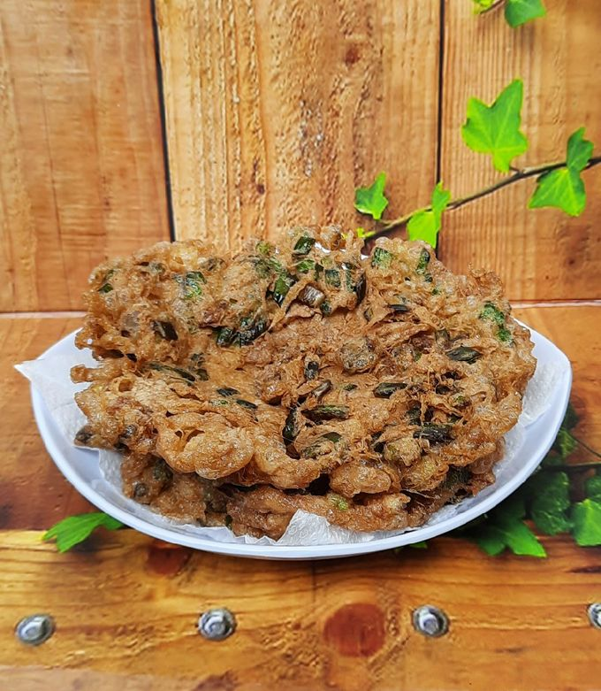

Home
Indonesian Crispy Omelet

Description
If you like your eggs with crispy, lacy edges (common in local Wartegs), try this version.
Ingredients
- 2 eggs
- 1 stalk green onion (sliced)
- 1 small shallot (sliced)
- Salt
- Cooking oil
Steps
- Mix: Whisk eggs with the green onions and shallots.
- High Heat: Heat a generous amount of oil (about 2–3 tbsp) until it’s very hot—almost smoking.
- The Pour: Pour the eggs in from a height (this creates the bubbles and "frizz").
- Crisp: Let it fry until the edges are golden and crispy. Flip once to cook the other side for 30 seconds.
- Drain: Remove and let the excess oil drain before serving with steamed rice.